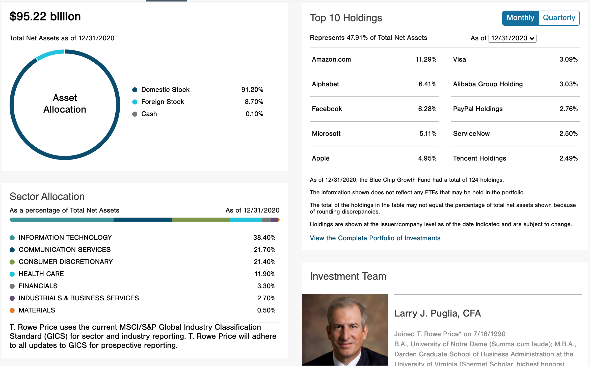
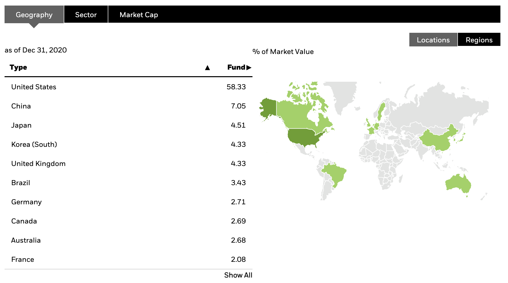
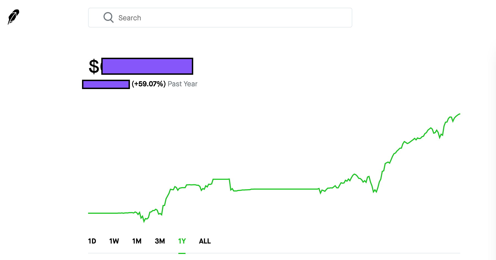

- Disclaimer: DON’T SUE ME BRO! This is not a financial advice, invest at your own risk. Please do your own research and then invest like a PRO not a BRO.
What’s with the Markets?
Bears
-
“QE Infinity”
Quantitative Easing: Seems like Feds are buying all asset classes to ingest so much money in the economy. It will have it’s side effects. Maybe over valuation of assets will create some sort of crash.
-
Robinhood Investors(Like Me) Are the Problem:
There are a lot of investors out there that are new to the markets and all they have seen is the market that keeps going up. Once the sell-off really gets bad, people(weak hands) will start dumping it all.
Although, in my opinion: So called “Weak Hands” or “Retails Investors”, helped the overall market after the March lows to bring some stability.
Bulls
-
Where would the ~$1.9T stimulus go?
Most of this money will go towards to consumer spending and as a result towards the economy which at the end will inflate the stock prices further.
-
Vaccine will cure everything.
Opposite swing of pendulum’s momentum: Once everyone is vaccinated, we are cruising again! People will start to travel, if not for work then for leisure.
Using Leverage! Risk what you can afford to lose.
Why not Cash?
-
Inflation? Dollar devaluation?
The more money Feds print the value of the money will go down, that Burrito will cost more in future.
-
Lost opportunity? Maybe this is the most important one. Let’s say you invested $100k in the market and got 20% return and then the market crashes 20%, you are still non-negative.
Which is important to understand, as if you wait to buy till the market crashes, you are thinking yourself as fortune teller that the Market will drop by 20%.
If it only drops 10%, and you don’t buy anything, and it goes up 30%, you missed the opportunity to gain 40%. I think you get the point.
Staying at least 70% invested it a great strategy.
What does leverage bring?
Let’s say you are 100% invested in the stock market right now and in a month it is down 30%? What would you do? Sell? Buy? or Buy like you are on Steroids?
The Simplest way to build wealth is; buy low sell high?
Let’s say you have $100k in your investments, and you have a margin available upto the same amount at 2.5% from Robinhood.
When the market is down 30% you can borrow more money to invest, of-course to your own risk levels(Don’t borrow to put your life or well-being at risk).
Think about leverages, you can get a Personal Loan of upto $25k at about 9% interest, and let’s say a 10% return from S&P 500 after taxes be more like 8% return you will still lose money on your investments.
You might think - “common man, I can make a much higher return than that!” Then you have much higher risk tolerance than I have. My goal is to sleep at night and wake up with a little more money than I had when I went to bed.
I personally think 2.5% is a great interest rate available as the margin. I like to think it as, I am buying a “Rivian” truck when I borrow that margin. Only that the truck will probably make me money while I am asleep. I know, I know. It’s not fun though.
I love Rivian! Also, I cannot afford it at this point, but when I will be able to, I will buy it with 100% cash.
Some people would want to use HELOC(Home Equity Line Of Credit) to invest in stocks. Well I don’t own any real estate but if I did, I would never risk my home. It’s more emotional than logical.
How am I allocating my investments to sleep well at night.
Let’s go over my major investment accounts.
- 401k(60% Roth + 40% Traditional): TRBCX (T. Rowe Price)
- Roth IRA: Fidelity Investments
- Individual: Robinhood Investments
401k: TRBCX : 54% of Net Worth
Don’t use too much of your brain! Just find a great fund manager and contribute consistently. Usually limited investment options.

Since most of my retirement savings are in 401k account, and the best blue chip fund available in my account is TRBCX.
I have been investing in this fund for last 3 years. The compound growth has been commendable at north of 70% thus far.
Thank you, Larry! Your extra bullish stance on Amazon has helped our retirements.
Roth IRA : 10% of Net Worth
The world is your oyster. Flexibility to invest this money in almost any security makes it #1 retirement option.
BSTZ
Why this closed end fund? What the heck is a closed end fund anyways?
Great Fund Managers.
According to advratings.com, Blackrock has the largest AUM(Assets Under Management) at ~$7.3T.
Your might say - “Well, seems like I can trust the company but how does it relate to the return on investment?”
Good question! Here are the reasons why I think it’s one of a kind investment options.
- Well diverse investments.
If want to invest in Tech sector, what would be your diversification goals?
- Globally Diverse?
- Ability to invest in Public as well as Private Companies?
I have to say, you are in luck as this fund does both. It invests in the best technology companies across the globe.

If you take a look at BSTZ’s portfolio, the company’s top investments also contain some private tech startups.
-
Great distributions/dividends. @~4%
Since Roth IRA account is after tax retirement account, your dividends grow tax-free. Magic of compounding will work for you.
-
Selling at a discount. @10%
Fund is currently selling for a 10% discount. I think that’s easy money.
-
Limited(~12Yrs) Fund Life. It’s a good thing.
The fund will be liquidated in about 12 years from the inception. At the end shareholders should be paid at the current NAV and not the discounted value.
-
Robinhood Investors cannot buy it anymore
Robinhood does not support closed end funds anymore so that should keep the daily volatility a bit lower?
Robinhood Individual Account : ~35% of Net Worth
Remember, there is always something you can buy at discount. Just look closely.
1 Year return: Even when I made so many mistakes. Better luck next time.

Here are my 10x bets for next 10 years.
- Lemonade
- BigCommerce
- Unity
- Upwork
- Opendoor
- Accolade
- Fubo TV
- Shift Technologies
- Shopify
- Sofi(IPOE)
I will add to the above holdings as I see the opportunities, at this point I am not planning to sell any of these for next few years. Even though some of them are already up >200%.
I do own some dividend stocks as well i.e.:
- Enterprise Products
- US Bank
- Wells Fargo
- Ladder Capital
- Chevron
- Exxon
- Realty Income
- Carnival Cruises
- United Airlines
Next Big Goal
Buy a 4plex with ‘positive’ cash flow.
Conclusion
Thank you folks. Work hard, stay humble…. coz it’s just money not Life.
comments powered by